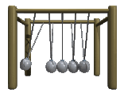

Ley de la conservación de la energía
 De: La Frikipedia, la enciclopedia extremadamente seria.
De: La Frikipedia, la enciclopedia extremadamente seria.

|
PELIGRO
Este artículo o sección no es más que una torpe lista. Si crees que vale la pena, edítalo para mejorar su calidad y excelencia
|
Ley inventada por un borracho para explicar por qué los objetos se movían tanto cuando estaba borracho, pues absorbían toda la energía que el perdía al andar. No obstante, está demostrado que esta teoría es falsa, porque cuando te pajeas y pierdes energía a sudar, no la conservas, o si te quedas en números rojos, te quitan la energía eléctrica de la casa y no te la vuelven a dar.
Enunciados de la ley
Esto dice básicamente la ley de la conservación:
- La energía se conserva, porque lo digo yo
- Si no lo dijera yo no se conservaría
- ¿Me prestas veinte leros?
- Las farolas absorben mi energía ¡SOCORRO!
- Si te
follo doy una hostia, mi energía pasa a tu cuerpo
- Tú... tas borraxlo
- Si metes cerveza en una botella, se carga de energía positiva y el universo desaparece
- Si metes hagua en una botella, deja la de vino para mí
- ¿He oído vino?
- La energía es enérgica
- Si te hostio mi puño se queda cargado de energía
- E=MC2 ¿Que coño me he fumado para decir eso?
- La energía es producto de tu imaginación, y si no la imaginas, no existe. Pero conservar se conserva ¿eh?
- Las latas de conserva contienen energía conservada
- Guardo energía para dominar el mundo cuando me canse de ser físico ¿quieres un poco?
- Si eres electricista, la energía se conserva dos veces mejor en tu cuerpo
- La energía se conserva ¿algún problema?
- Si me dices que la energía no se conserva, te hostio
- ¡Mira, un haz de energía!
- Energía r00lz
- La energía ni se crea ni se destruye, sólo se transpasa de un cuerpo a otro ¿follamos?
- La energía se conserva y punto ¿¡¿Queda claro?!?
- E=MC2 realmente significa España=Mucho Calor2
Demostración de que no se conserva
He aquí los principios con los que se dedujeron que la energía no se conserva:
- La energía no se conserva, y si alguien dice lo contrario, lo ahostiamos toda la comunidad científica
- Si te haces una paja, pierdes energía, y no se conserva en tu cuerpo
- Las latas tienen agujeros y la energía se escapa por ahí, por lo tanto no se conserva
- ¿La energía? ¿que es eso?
- Si no se ve no se conserva
- Aunque no se traspase energía de mi cuerpo al tuyo ¿follamos?
- Si eres muy enérgico, la energía se te escapa por el culo
- La energía ha llevado una vida muy dura de sexo, drogas y rock and roll, por eso se conserva tan mal
- Nucelar, se dice Nucelar
- La energía se conserva. (sonido de metralleta) ¿Alguien más quiere morir?
- Si te ahostio muy fuerte, tú probablemente no tendrás energía suficiente para ahostiarme a mí
- La energía se crea en las centrales nucelares y se destruye en las trituradoras
- Asdfear gasta energía
- Fornicar gasta energía, aunque lo más probable es que tú no lo puedas comprobar en la vida ¡Mwahahahahaha!
- Si tienes una lata de energía en tu casa, no dudes en que te mataremos
- Si andas cinco pasos, probablemente pierdas el doble de la energía de la que en tu vida podrás ganar
- El borracho que creó la ley de la conservación ahora está muerto...
- Si eructas pierdes gas y energía
- ¿Dices que la energía se conserva? A ver que te pongo a correr treinta kilómetros
- Si la energía se conservara, los pedos no existirían
- El ser humano creó la bomba atómica para acabar con la energía
- La energía da asco ¡discriminémosla entre todos!
- Si dices que la energía no se conserva, bajo el fusil.
¿Para que coño sirve esta ley actualmente?
Aunque está rechazada como ley física, sirve para muchas cosas actualmente, principalmente para hacer juguetitos…
Latas de conserva
latas que contienen energía
Su función primigenia era guardar energía conservada y no comida. Se dejó de usar de esta forma cuando la se abrió por primera vez una lata de conserva de energía, y como estaba comprimida ahí dentro, se escapó y le dio en un ojo al que la abrió… Ahora el uso de latas de conserva de energía está restringido al gobierno, para usarlas como arma de destrucción masiva sacaojos…
 Los científicos se entretienen con poco...
Cacharrito de las bolas
Es un cacharrito con bolas que le das a una y se mueven todas. La energía curra como una loca para moverse de una bola a otra conservándose de puta madre. Es el juguete preferido de los científicos…
Autor(es):
- Krusher
- Nexo
- Fordus
- MURO DE AGUAS
- Frikiman
- Nadaquever
- Veni Vidi Vici
- Barrythefreak
- Kevrochi
- Harry El del Pote
Frikipedia 2005-2016, Licencia
GFDL 1.2 - Extraído por FrikiLeaks